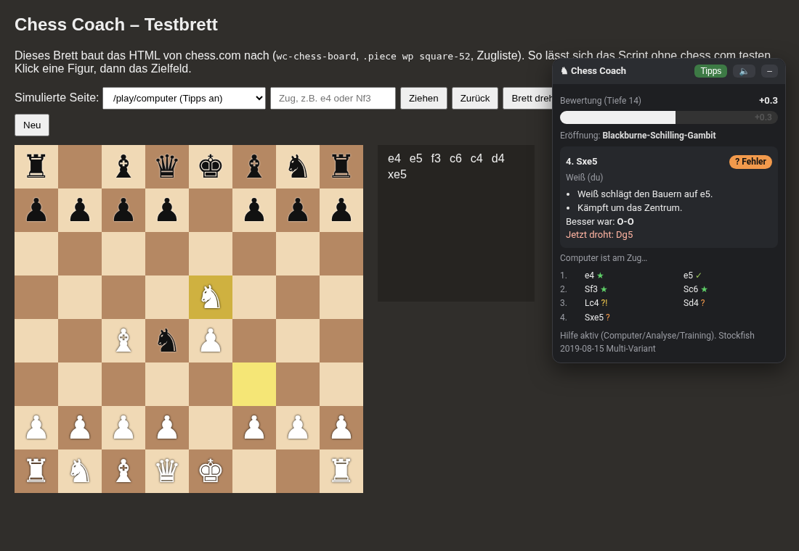
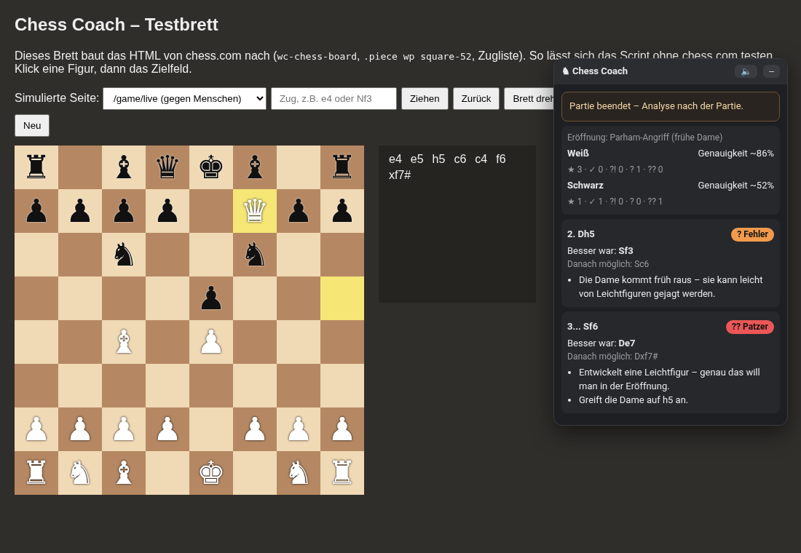

♞ Chess Coach Live
Dein Schach-Coach im Browser: kommentiert jeden Zug auf Chess.com live auf Deutsch – mit Bewertung, Erklärungen und Tipps.
1
Tampermonkey installieren
Installiere die kostenlose Browser-Erweiterung Tampermonkey für deinen Browser:
Chrome / Brave / Opera Firefox EdgeChrome/Edge: Unter chrome://extensions bei Tampermonkey auf Details und „Nutzerskripts zulassen“ einschalten (bei älteren Versionen oben rechts den Entwicklermodus). Sonst laufen Userscripts nicht.
2
Script installieren
Klick auf den Button. Tampermonkey öffnet sich – dort auf Installieren klicken.
Chess Coach installieren3
Chess.com gegen den Computer öffnen
Öffne chess.com/play/computer und spiel los. Rechts erscheint das Coach-Fenster.
- Fenster an der Kopfzeile verschieben, mit – minimieren
- 🔈 schaltet die Sprachausgabe ein (deutsche Stimme)
- Tipps blendet den besten Zug und den grünen Pfeil ein oder aus
Fair Play – fest eingebaut
Tipps, Pfeile und Bewertung gibt es nur gegen den Computer, in der Analyse, bei Puzzles, Lektionen und im Training. In Partien gegen echte Menschen zeigt der Coach nur: „Live gegen Menschen: Tipps aus (Fair Play). Analyse nach der Partie verfügbar.“ Nach dem Spielende bekommst du die komplette Analyse deiner Partie. So bleibt dein Account sicher.
Tipps, Pfeile und Bewertung gibt es nur gegen den Computer, in der Analyse, bei Puzzles, Lektionen und im Training. In Partien gegen echte Menschen zeigt der Coach nur: „Live gegen Menschen: Tipps aus (Fair Play). Analyse nach der Partie verfügbar.“ Nach dem Spielende bekommst du die komplette Analyse deiner Partie. So bleibt dein Account sicher.
So sieht es aus


Ausprobieren ohne Chess.com: Testbrett · Code: GitHub
Funktioniert im Desktop-Browser, nicht in der Chess.com-App. Engine: Stockfish (läuft lokal in deinem Browser).